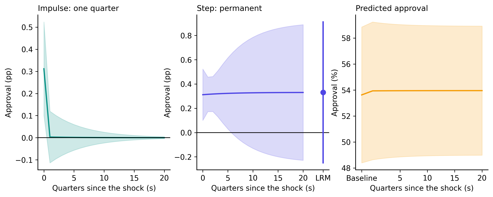
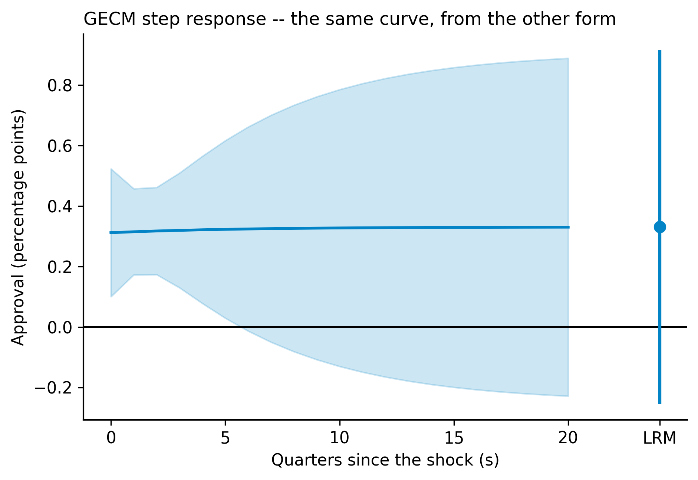
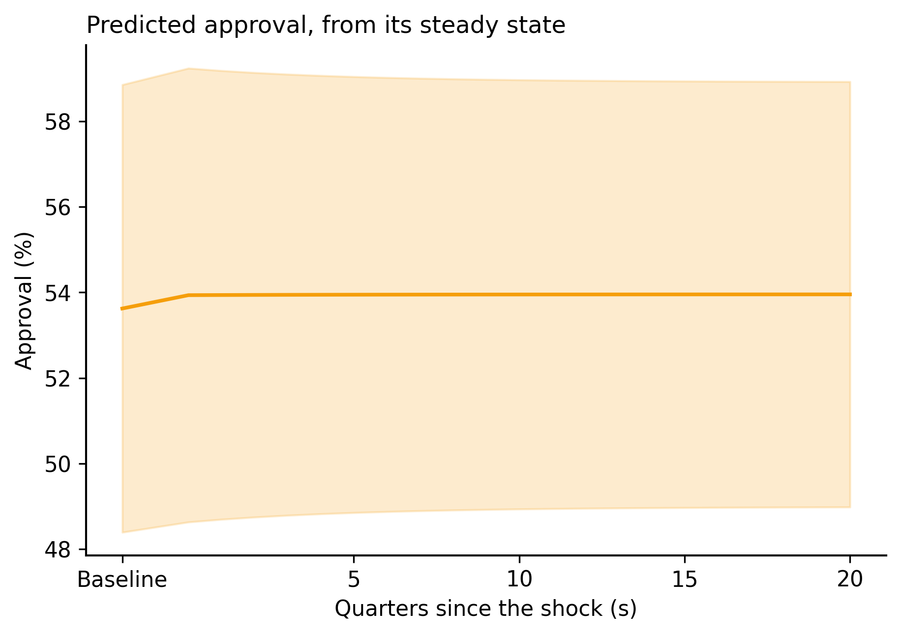
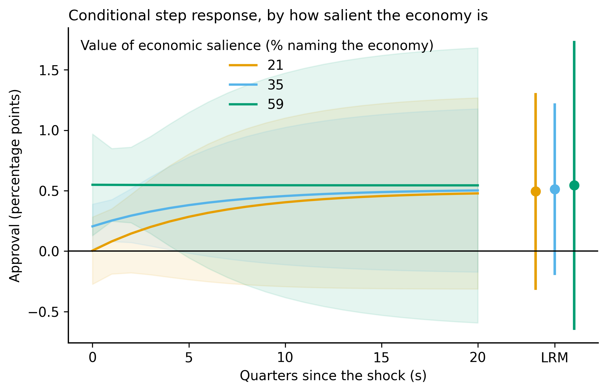
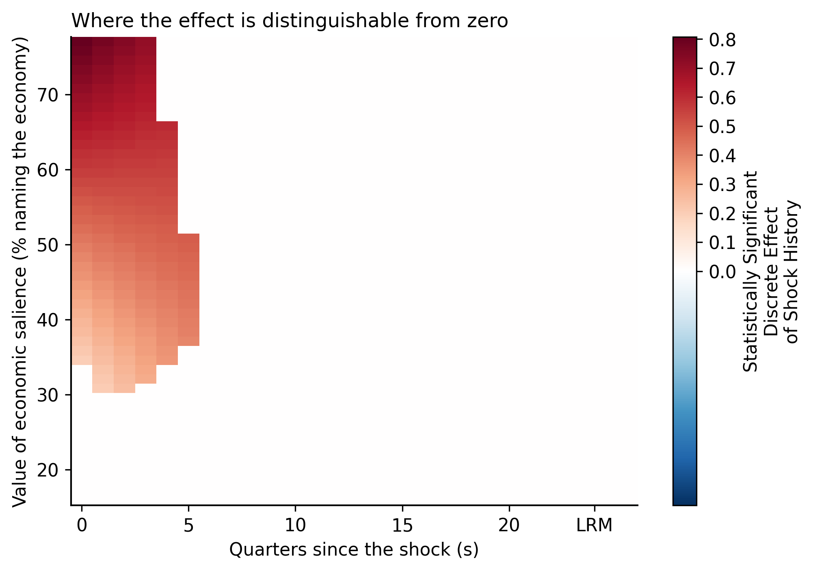

Dynamic effects from single-equation time series models, with interactions.
Impulse and step responses, arbitrary shock histories, long-run multipliers, fitted trajectories and conditional effects — for ADL and error-correction models, with delta-method standard errors throughout.
pip install tseffects
Implements the framework of Warner, Vande Kamp and Jordan (2026),
Conditional Relationships in Dynamic Models, Political Science Research
and Methods. A Python port of the R packagetseffects
by Soren Jordan, Garrett N. Vande Kamp and Reshi Rajan.
The problem
Here is a real coefficient table — US presidential approval on consumer sentiment, 139 quarters from 1981 to 2015, from the data shipped with this package.
| Coefficient | Estimate | Std. err. | t | P>|t| |
|---|---|---|---|---|
l_1_APPROVE | 0.8385 | 0.044 | 19.182 | 0.000 |
UMCSENT | 0.3118 | 0.087 | 3.595 | 0.000 |
l_1_UMCSENT | −0.2584 | 0.087 | −2.972 | 0.004 |
DIVIDEDGOV | 1.2616 | 1.042 | 1.211 | 0.228 |
The two sentiment coefficients almost cancel: +0.31 and −0.26, a net +0.05. A reader stops here and concludes that consumer sentiment barely moves approval.
That reader is wrong by a factor of six. Because approval carries 0.84 of itself forward each quarter, a permanent one-point rise in sentiment raises approval by +0.33 points. And there is a second thing the coefficient table cannot tell you: that effect is significant at the 1 % level for the first year, and by the long run its confidence interval covers zero.
You cannot read either fact off the coefficients. You need the response function, and you need its standard errors.

Impulse, step, any integer order h, cumulations, and arbitrary shock histories — one family, one interface.
The delta method on the exact algebraic formula, so long-run multipliers and fitted values get real intervals, not approximations.
The two parameterizations are translated exactly into one another, so the same question gives the same answer either way.
When the model carries x × z, the effect is a surface over period and moderator — drawn as lines or as a heatmap.
Getting started
pip install tseffects
Needs Python 3.9 or newer, and pulls in numpy, scipy,
pandas, sympy, statsmodels and
matplotlib.
Never used Python? The from-zero guide in the README walks through installing Python, opening a terminal on Windows or macOS, running your first script, and loading your own Excel or CSV file — written for someone who has never typed a command.
import statsmodels.formula.api as smf
from tseffects import load_toy_data, gdrf_adl
data = load_toy_data()
# 1. Estimate the model yourself, however you like. It is just OLS.
fit = smf.ols("y ~ l_1_y + x + l_1_x", data=data).fit()
# 2. Tell the package which coefficient sits at which lag.
out = gdrf_adl(
fit,
x_vrbl={"x": 0, "l_1_x": 1}, # the shock variable and its lags
y_vrbl={"l_1_y": 1}, # the lagged dependent variable
shock_history="step", # a permanent one-unit rise in x
s_limit=20, # report 20 periods
)
print(out.summary()) # the table
out.plot() # the figure
out.formulae["s = 2"] # 'l_1_x*l_1_y + l_1_y**2*x'That is the whole interface. You estimate the model; you describe its lag structure; the package does the dynamics. There is no required naming convention — whatever your coefficients are called is what you pass.
The method
An autoregressive distributed lag model, possibly in differences:
$$\Delta^{d_y} y_t \;=\; \sum_{i=1}^{p} \alpha_i\, \Delta^{d_y} y_{t-i} \;+\; \sum_{q=0}^{Q} \beta_q\, \Delta^{d_x} x_{t-q} \;+\; \varepsilon_t$$Shock \(x\) by one unit for one period. The response of \(y\) \(s\) periods later satisfies a recursion: the direct effect through \(\beta_s\), plus whatever the autoregression carries forward.
$$\xi_s \;=\; \beta_s \;+\; \sum_{i=1}^{\min(s,p)} \alpha_i\, \xi_{s-i}, \qquad \xi_0 = \beta_0$$Every other quantity is a weighted sum of those impulse responses. The weights depend on one number, \(m = h - d_x + d_y\), where \(h\) is the order of the shock history:
$$\mathrm{GDRF}_{(s,\,h,\,d_y,\,d_x)} \;=\; \sum_{j=0}^{s} w_j\, \xi_{s-j}, \qquad w_j \;=\; \bigl(2\cdot 0^{|m|-m}-1\bigr)^{j} \binom{|m|-1+(1+j)\,0^{|m|-m}}{j}$$reading \(0^0 = 1\). The familiar cases fall straight out:
| m | Weights | What it is |
|---|---|---|
| −2 | 1, −1, 0, … | First difference of the impulse response |
| −1 | 1, 0, 0, … | Impulse Response Function |
| 0 | 1, 1, 1, … | Step Response Function — a running sum |
| 1 | 1, 2, 3, … | Cumulated step response |
A finite, non-zero limit exists only when \(h - d_x + d_y = 0\). When it does:
$$\mathrm{LRM} \;=\; \frac{\sum_{q} \beta_q}{1 - \sum_{i} \alpha_i}$$Outside that condition the effects either decay to zero or diverge, and the package says which in a warning rather than printing a number that means nothing. That is the condition under which a “long-run effect” is a well-defined object at all.
An error-correction model is a reparameterization, not a different model, so no information is lost in translating between them:
$$\Delta y_t = \theta_y\, y_{t-1} + \theta_x\, x_{t-1} + \sum_i \alpha_i \Delta y_{t-i} + \sum_q \beta_q \Delta x_{t-q} + \varepsilon_t$$maps to ADL coefficients \(\beta^{\mathrm{ADL}}_0 = \beta_0\), \(\beta^{\mathrm{ADL}}_1 = \theta_x + \beta_1 - \beta_0\), \(\alpha^{\mathrm{ADL}}_1 = \theta_y + \alpha_1 + 1\), and so on — with the ADL representation one order higher than the GECM. In the GECM the long-run multiplier reads straight off the two levels terms as \(-\theta_x/\theta_y\).
Each quantity is built as an algebraic formula in the coefficient names, then evaluated by the delta method:
$$\widehat{g} = g(\hat\beta), \qquad \mathrm{SE}(\widehat{g}) = \sqrt{\nabla g(\hat\beta)'\, V\, \nabla g(\hat\beta)}$$with \(V\) the classical or any heteroskedasticity-consistent covariance matrix, and a normal confidence interval. One machinery therefore covers impulse responses, cumulations, long-run multipliers, fitted values and conditional effects alike.
What each piece of the code computes, and where it comes from.
| Code | Equation | What it computes |
|---|---|---|
pulse_calculator | \(\xi_s = \beta_s + \sum_i \alpha_i \xi_{s-i}\) | Impulse response formulae, period by period |
shock_weights | \(w_j(h,d_x,d_y)\) | The generalized binomial weights |
general_calculator | \(\sum_j w_j \xi_{s-j}\) | The GDRF for an integer shock history |
convolution_calculator | \(\sum_k \tilde h_k \xi_{s-k}\) | An arbitrary shock history, as dated impulses |
gecm_to_adl | \(\beta^{\mathrm{ADL}}_q,\ \alpha^{\mathrm{ADL}}_p\) | The exact GECM → ADL translation |
yhat_calculator | \(\bar y + \text{shock} \times \mathrm{GDRF}\) | Fitted values, from a baseline or a steady state |
delta_method | \(\nabla g' V \nabla g\) | The standard error of any of the above |
vcov_hc | \((X'X)^{-1}X'\Omega X(X'X)^{-1}\) | const and HC0–HC5 covariance matrices |
Reference
gdrf_adl(model, x_vrbl, y_vrbl=None, …)Dynamic effects from an autoregressive distributed lag model.
| Argument | Default | What it does |
|---|---|---|
model | — | A fitted statsmodels OLS result, or a (coefficients, vcov) pair |
x_vrbl | — | {coefficient name: lag order} for the shock variable |
y_vrbl | None | Same for the lagged dependent variable; None means finite dynamics |
d_x, d_y | 0 | How many times each variable was differenced before estimation |
shock_history | "pulse" | "pulse", "step", an integer h, or a sequence of length s_limit + 1 |
inferences_x | "levels" | Whether the shock is applied in levels or differences |
inferences_y | "levels" | Whether the response is read in levels or differences |
effect_type | "discrete" | The effect itself, or "fitted" for the trajectory of y |
cumulative | False | Accumulate the effects over periods |
prediction_values | None | Where to hold the other regressors for a steady-state baseline |
baseline_y, baseline_y_se | None, 0 | An asserted baseline level of y and its standard error |
shock_size | 1.0 | Size of the shock, in the units of x |
level | 0.95 | Confidence level |
s_limit | 20 | Number of periods to report |
se_type | "const" | "const", or "HC0"–"HC5" |
return_lrm | True | Report the long-run multiplier when it exists |
gdrf_gecm(model, x_vrbl, y_vrbl, x_d_vrbl, y_d_vrbl=None, …)The same, from a Generalized Error-Correction Model.
x_vrbl and y_vrbl are the first lag in levels —
the error-correction terms, exactly one of each. x_d_vrbl and
y_d_vrbl are the differenced terms and their lags. Everything else
is as above, except that prediction_values is unavailable; use
baseline_y.
interact_adl(model, x_vrbl, z_vrbl, x_z_vrbl, y_vrbl=None, …)Conditional effects from a model carrying x × z.
In x_z_vrbl the lag order is the one on the x side of the
product. x_l_1_z (contemporaneous x times lagged z) is 0;
z_l_1_x (lagged x times contemporaneous z) is 1.
| Extra argument | Default | What it does |
|---|---|---|
plot_type | "lines" | "lines" or "heatmap" |
line_options | "z.lines" | "z.lines": period on x, one line per z. "s.lines": z on x, one line per period |
heatmap_options | "significant" | Blank the cells whose interval covers zero, or show "all" |
z_vals | None | Up to five values for lines; exactly two (lower, upper) for a swept range |
s_vals | (0, "LRM") | Periods to draw for s.lines |
z_label | first z name | Axis label for the moderator |
Every function returns an EffectResult.
.estimates | A DataFrame: Period, the effect, SE, Lower, Upper (and Z for an interaction) |
.to_frame() | The same, plus z statistics, p-values and significance stars |
.summary() | An aligned table; also .as_latex(), .as_markdown(), .as_html() |
.formulae | The algebra behind each row, keyed "s = 0", "s = 1", …, "LRM" |
.shocks | The weights applied to the impulse responses |
.lrm | The long-run multiplier row, or None |
.plot() | The figure; returns the matplotlib axes |
Simpler wrappers adl_effects and gecm_effects cover the
common case — everything in levels, discrete effects — with fewer arguments.
Colour helpers parula_colors, parula_cmap,
matlab_jet_colors, turbo_colors,
bluered_colors, sinha_colors and
resolve_colorscale match the R packages, so a figure drawn here and
one drawn there look identical.
Worked example
Real data, start to finish. The complete script is
examples/approval_empirical.py,
and it generates every figure on this page.
The data. Presidential approval, consumer sentiment and economic
salience, 139 quarters from 1981Q2 to 2015Q4. From Cavari, Amnon (2019),
Presidential Studies Quarterly 49(4): 798–826,
doi:10.1111/psq.12594. Shipped with
the package as load_approval().
import statsmodels.formula.api as smf
import tseffects as ts
data = ts.load_approval().copy()
for name in ("APPROVE", "UMCSENT"):
data[f"l_1_{name}"] = data[name].shift(1) # the lag
data[f"d_{name}"] = data[name].diff() # the first difference
data = data.dropna(subset=["APPROVE", "l_1_APPROVE", "d_APPROVE", "UMCSENT",
"l_1_UMCSENT", "d_UMCSENT", "DIVIDEDGOV"]).reset_index(drop=True)Drop missing values only on the columns your model uses. A bare
data.dropna() throws away rows over unrelated columns and silently
changes your sample — and the answer with it.
fit = smf.ols("APPROVE ~ l_1_APPROVE + UMCSENT + l_1_UMCSENT + DIVIDEDGOV",
data=data).fit()step = ts.gdrf_adl(fit,
x_vrbl={"UMCSENT": 0, "l_1_UMCSENT": 1},
y_vrbl={"l_1_APPROVE": 1},
shock_history="step", s_limit=20, se_type="HC3")
print(step.summary())| Period | Effect | Std. err. | z | P>|z| | 95 % CI | |
|---|---|---|---|---|---|---|
| 0 | 0.3118 | 0.1079 | 2.891 | 0.004 | [0.1004, 0.5233] | *** |
| 1 | 0.3149 | 0.0727 | 4.332 | 0.000 | [0.1724, 0.4574] | *** |
| 2 | 0.3175 | 0.0736 | 4.312 | 0.000 | [0.1732, 0.4617] | *** |
| 3 | 0.3196 | 0.0969 | 3.299 | 0.001 | [0.1297, 0.5095] | *** |
| 4 | 0.3214 | 0.1242 | 2.587 | 0.010 | [0.0779, 0.5649] | *** |
| 5 | 0.3229 | 0.1498 | 2.156 | 0.031 | [0.0294, 0.6165] | ** |
| 6 | 0.3242 | 0.1722 | 1.882 | 0.060 | [−0.0134, 0.6617] | * |
| 8 | 0.3261 | 0.2079 | 1.568 | 0.117 | [−0.0815, 0.7337] | |
| 12 | 0.3285 | 0.2519 | 1.304 | 0.192 | [−0.1653, 0.8222] | |
| 20 | 0.3302 | 0.2851 | 1.158 | 0.247 | [−0.2286, 0.8889] | |
| LRM | 0.3307 | 0.2960 | 1.117 | 0.264 | [−0.2495, 0.9109] |
*** p<0.01, ** p<0.05, * p<0.10. Heteroskedasticity-consistent standard errors (HC3). Rows 7, 9–11 and 13–19 omitted for space; the full table has every period.
The GECM and the ADL are the same model written two ways, so the answer must be identical — and it is, to 2.3 × 10⁻¹⁴:
gecm_fit = smf.ols("d_APPROVE ~ l_1_APPROVE + l_1_UMCSENT + d_UMCSENT + DIVIDEDGOV",
data=data).fit()
gecm = ts.gdrf_gecm(gecm_fit,
x_vrbl={"l_1_UMCSENT": 1}, y_vrbl={"l_1_APPROVE": 1},
x_d_vrbl={"d_UMCSENT": 0}, y_d_vrbl=None,
shock_history="step", s_limit=20, se_type="HC3")
# LRM 0.3307, SE 0.2960 — the same numbers, from the other parameterization
Add the effect to the model-implied steady state and read the trajectory of approval itself rather than the change. The baseline is 53.6 %, and the delta method carries the uncertainty in that steady state through to every period.
fitted = ts.gdrf_adl(fit,
x_vrbl={"UMCSENT": 0, "l_1_UMCSENT": 1},
y_vrbl={"l_1_APPROVE": 1},
shock_history="step", effect_type="fitted",
prediction_values={"UMCSENT": data["UMCSENT"].mean(),
"l_1_UMCSENT": data["UMCSENT"].mean(),
"DIVIDEDGOV": data["DIVIDEDGOV"].mean()},
s_limit=20, se_type="HC3")
This is Cavari’s own thesis, and it is an interaction. Both interaction terms are significant — +0.0143 (p = 0.014) and −0.0141 (p = 0.016) — and what they govern turns out to be the speed of the response rather than where it ends up.
| Economic salience | s = 0 | s = 4 | s = 20 | Long run |
|---|---|---|---|---|
| 21 % (10th pct) | 0.005 (p = 0.97) | 0.246 | 0.478 | 0.494 |
| 35 % (median) | 0.205 (p = 0.028) | 0.357 | 0.502 | 0.513 |
| 59 % (90th pct) | 0.549 (p = 0.010) | 0.547 | 0.544 | 0.544 |
When the economy is on the public’s mind, approval makes its whole move in the quarter the shock lands. When it is not, the immediate effect is indistinguishable from zero and it takes about five years to arrive at essentially the same place. The three long-run multipliers are nearly identical: the destination does not depend on salience, only the journey. No coefficient table can show you that.
data["UMC_MIP"] = data["UMCSENT"] * data["MIP_MACROECONOMICS"]
data["l1UMC_MIP"] = data["l_1_UMCSENT"] * data["MIP_MACROECONOMICS"]
inter_fit = smf.ols(
"APPROVE ~ l_1_APPROVE + UMCSENT + l_1_UMCSENT + MIP_MACROECONOMICS"
" + UMC_MIP + l1UMC_MIP + DIVIDEDGOV", data=data).fit()
inter = ts.interact_adl(inter_fit,
x_vrbl={"UMCSENT": 0, "l_1_UMCSENT": 1},
z_vrbl={"MIP_MACROECONOMICS": 0},
x_z_vrbl={"UMC_MIP": 0, "l1UMC_MIP": 1},
y_vrbl={"l_1_APPROVE": 1},
shock_history="step", z_vals=[21, 35, 59],
s_limit=20, se_type="HC3",
z_label="economic salience (% naming the economy)")
inter.plot()

heatmap_options="significant": the white
region is where the confidence interval covers zero, so the coloured region is
exactly where the effect can be told apart from nothing.
print(step.summary().as_latex()) # booktabs, stars, a notes block
step.to_frame().to_csv("effects.csv", index=False)
step.plot().figure.savefig("figure1.pdf", bbox_inches="tight")How to read it
One row per period s. Effect is the response of y, in the units
of y, to the shock you specified in x. SE is its delta-method standard
error. Stars are *** at 1 %, ** at 5 %,
* at 10 %, from a two-sided normal test. The LRM row is the
limit as s → ∞; a baseline row, on fitted values, is the
pre-shock level of y.
The solid line is the point estimate and the band is the confidence interval. The horizontal line at zero appears for discrete effects and not for fitted values, where zero means nothing. A long-run multiplier is drawn as a separate point past the end of the path, because it is a limit rather than a period.
Each period adds another estimated coefficient to the sum, so the variance accumulates. In the approval example the point estimate is flat at 0.33 while the standard error goes from 0.07 to 0.29 — the effect is firmly established in the short run and not distinguishable from zero in the long run.
A warning has told you why: a long-run multiplier exists only when h − dx + dy = 0. Outside that the effects decay to zero or diverge, and there is no finite limit to report.
| Question | Answer |
|---|---|
| Which shock history? | "step" for “what if x moves permanently” (a policy, a regime, a trend). "pulse" for “what if x blips once”. cumulative=True on a pulse accumulates that blip. |
Which se_type? | "HC3" is the safe small-sample default; "HC1" matches Stata’s robust; "const" if you have tested and accepted homoskedasticity. |
| How many periods? | Enough that the response flattens — twenty for an AR coefficient near 0.85, sixty near 0.97. The LRM is exact regardless of s_limit. |
| Levels or differences? | If you estimated in differences because the series are I(1) but the question is about levels, set d_x/d_y and leave the inferences_ arguments at "levels". The package unwinds it. |
| Lag orders? | The number in x_vrbl is the lag of that coefficient, not its position in the formula. {"x": 0, "l_2_x": 2} is correct for a model that skips lag 1. |
Evidence
Twenty-nine specifications run through the R package and compared value by value at a relative tolerance of 1e-9: all eight covariance types on seven models, every shock history, levels and differences inference both ways, fitted values from a steady state and from an asserted baseline, GECM at one and two lags, finite distributed lags, interactions, non-default confidence levels, the binomial weights, and the GECM-to-ADL translation string for string.
The GECM path reproduces the isomorphic ADL fit to 1.3 × 10⁻¹⁵ on simulated data and 2.3 × 10⁻¹⁴ on the approval data — the sharpest available check on the translation, and it needs no reference implementation at all.
Invariants and identities that must hold whatever the data: the step response is the running sum of the impulse response, a cumulated pulse equals the step, shock size scales linearly, a custom unit impulse reproduces the pulse, and the long run is the limit of the path.
Rscript validate/r_reference.R # 29 specifications through the R package
python validate/compare.py # the same 29 in Python, compared value by valueSources